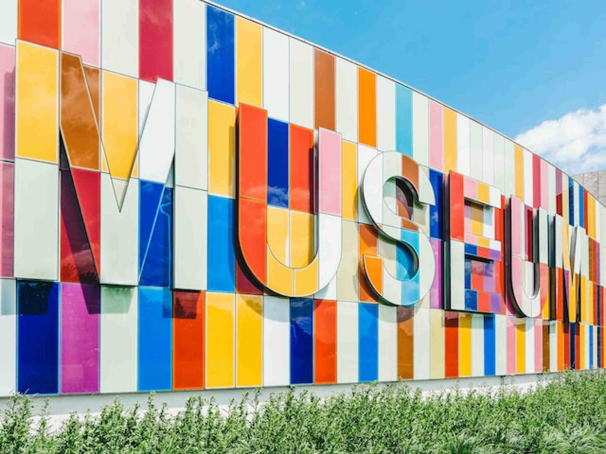

About us
Over the course of human history, science has developed from our early understanding of fire, wind, water, and earth to exploring everything from galaxies far away to the very building blocks of life itself.
The aim of our museum is to create a space where everyone can experience the wonders of our discoveries and perhaps even ignite a lifelong passion to continue the exploration of the world around us.
We believe science should not be confined to the textbook, but brought to live through exhibits. This is why we have several different exhibits on the many varied subjects of science to explore. Many of these exhibits are designed for you to interact with and play around to see science come to life (apart from the dinosaur exhibits – they only come to life at night when everyone’s gone home).
We can’t wait to show you the magical world of science!
Location
Markensgate 100
4630 Kristiansand
Opening hours
Monday: Closed
Tuesday-Sunday: 10.00-18.00
Admission
The entrance is free for all.
Want to support the museum?
Accessibility
The museum has wheelchair accessibility ramps. It also has audio guides and braille display signs for the visually impaired.
Food and drink
There is a café attached to the museum where you can get light lunches, soft drinks, coffee, snacks and more.
Shop
Our shop offers a range of memorabilia from the museum as well as great gifts and activity packs that allow you to continue to explore science even after you’ve left the museum.